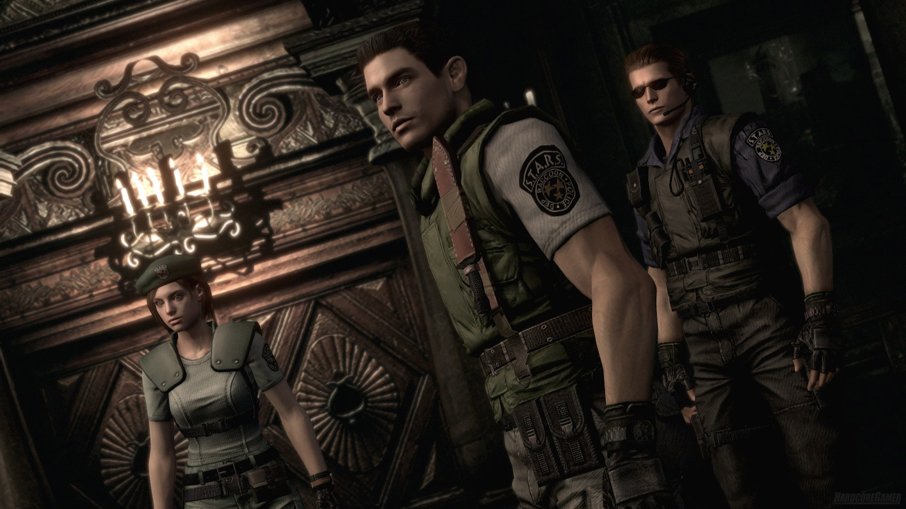

|  Resident Evil (also known as Biohazard in Japan) is a survival horror game that follows the story of a group of elite police officers from the Special Tactics And Rescue Service (S.T.A.R.S.) as they investigate the disappearance of their colleagues in a mysterious mansion outside of Raccoon City. Players take on the roles of either Chris Redfield or Jill Valentine, each with their unique strengths and weaknesses, as they explore the mansion, uncover its secrets, and battle hordes of zombies and other deadly creatures created by the sinister Umbrella Corporation. As they progress through the game, they discover the truth about the T-virus, a deadly biological weapon developed by Umbrella, and the horrific experiments conducted on humans and animals. They also encounter several key characters, including the mysterious and powerful Wesker, who has his agenda and the enigmatic Ada Wong. The game features challenging puzzles, intense combat, and a haunting atmosphere that has made it a classic of the horror genre. Ultimately, players must unravel the mystery of the mansion and find a way to escape before they succumb to the horrors within. | |
|---|---|